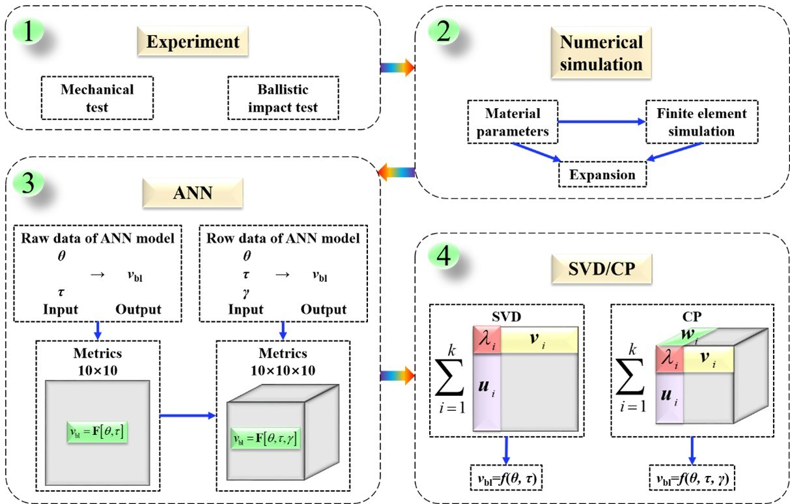
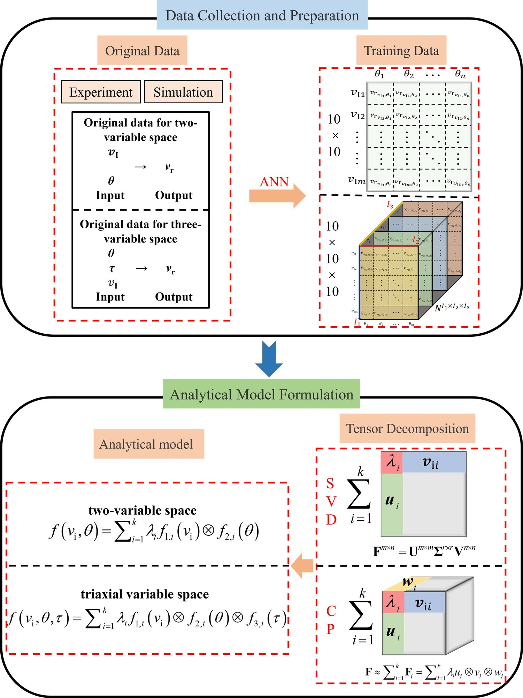

High-velocity impact problems involve complex, multi-parameter interactions between impactor geometry, impact velocity, plate thickness, and obliquity. Classical analytical models (e.g., Recht-Ipson) capture single-variable trends but fail to generalise across parameter combinations. This research develops data-driven surrogate models for high-velocity impact — using ANN combined with SVD/CP tensor decomposition (the same methodology established in constitutive modeling) to predict critical perforation velocity and residual velocity across the full multi-parameter impact space. The surrogate models are trained on experimental datasets augmented by validated FEM simulations, enabling accurate, physics-grounded predictions for impact-resistant structure design.
The surrogate modeling work rests on a decade of hands-on impact mechanics research spanning three material systems. First, high-velocity impact of metallic and layered plates: perforation of 6061-T651 aluminium plates by impactors of different nose shapes, and polymer-aluminium layered plates under high-velocity impact (first-authored in IJIE, 2018). Second, impact behavior of textile composites: multiscale modeling of 3D angle-interlock woven composites under impact and mesoscale damage modeling of 3D woven composites incorporating plasticity and fiber misalignment. Third, structural crashworthiness and energy absorption: the dynamic response of clamped plates and corrugated-core and PVC-foam-core sandwich structures under underwater impulsive loading, work that began during the master's period at Harbin Institute of Technology and produced three IJIE papers (2016–2017). Together these threads cover the plate side, the material side, and the structure side of impact resistance.
Key Contributions
- General ANN-based critical perforation velocity model accounting simultaneously for plate thickness, impact angle, and impactor nose shape
- Combines experimental data with validated FEM simulations to generate training datasets for sparse high-velocity impact data scenarios
- k-Fold cross-validation implemented for reliable model assessment with small sample sizes
- SVD/CP decomposition applied to reveal decoupled relationships between the critical perforation velocity and independent parameters
- Rank-1 decomposition achieves <6% MAPE while capturing fully decoupled effects of all input variables
- Equivalent analytical models derived for direct engineering application

Key Contributions
- Comprehensive ANN-based residual velocity surrogate model covering multiple impact variables: initial velocity, plate thickness, impact angle, impactor nose shape
- Extended dataset generated by combining experimental results with validated numerical simulations
- ANN + SVD/CP decomposition framework extended from the critical perforation velocity surrogate to residual velocity prediction
- "Safe region" and "perforating region" identified and mapped in multi-parameter impact space
- Decoupled CP components physically correlated with material failure mechanisms
- Outperforms classical Recht-Ipson model for multi-parameter residual velocity prediction

Key Contributions
- Systematic experimental study of polymer-aluminium bi-layer plates under high-velocity impact
- Comparison of polycarbonate (PC) vs. polymethyl methacrylate (PMMA) polymer layers with AA2024-T4 aluminium
- Effect of impactor nose shape (blunt vs. ogival) on perforation and deformation mechanisms
- Effect of polymer layer placement (impact side vs. back side) on impact resistance
- PC layers provide superior impact resistance improvement over PMMA; nose geometry significantly affects failure mode
- Establishes the experimental dataset and design guidelines that underpin later surrogate model development

Related Impact Mechanics Publications
Ongoing Directions
Alongside the published work, several directions are currently being explored with collaborators and their graduate students. None of them has been published yet, and they are listed here as an honest picture of where the experimental work is heading rather than as results. Each one builds experience and data that can be taken further by a future research group.